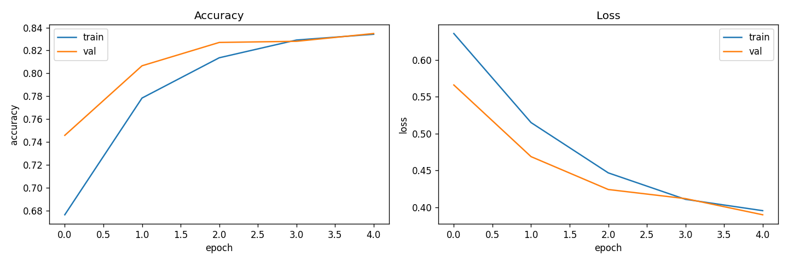
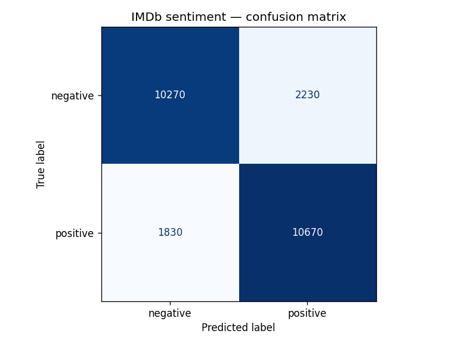
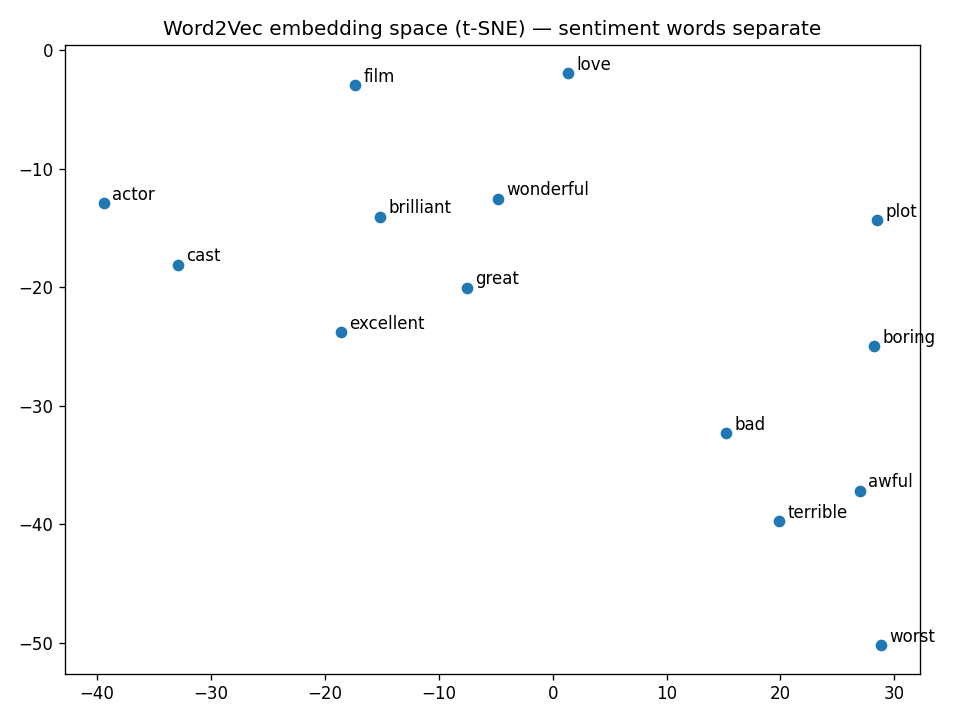

A three-way architecture bake-off, run properly: same data, same splits, one variable changed.
The standard Keras tutorial flattens an embedding layer into a dense network. That throws away word order and inflates the parameter count. Does a better-chosen architecture actually help, or is it the kind of change people assume helps without measuring?
Three models over identical splits (20k train / 5k validation / 25k held-out test), differing only in how they pool the embedding:
| Architecture | Validation accuracy |
|---|---|
mlp — Flatten → Dense (the tutorial) | 0.814 |
pool — GlobalAveragePooling → Dense ⭐ | 0.838 |
lstm — LSTM → Dense | 0.819 |
Held-out test set, winner: accuracy 0.838, F1 0.840.
Average-pooling beat both the tutorial baseline and the LSTM. The expensive sequence model was not the answer; the cheap structural fix was. Reporting precision, recall and a confusion matrix rather than accuracy alone is what made that visible.



t-SNE of the learned embedding space.
make train ARCH=pool # config-driven, one variable per run
make evaluate # accuracy, precision/recall/F1, confusion matrix
make demo # containerised inference appConfig-driven and tested, so a result can be reproduced rather than remembered.
PythonTensorFlow/KerasWord2Vec NLPDockerpytest